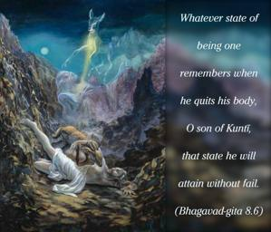
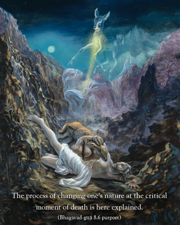

Whatever state of being one remembers when he quits his body, O son of Kuntī, that state he will attain without fail.


The process of changing one’s nature at the critical moment of death is here explained. A person who at the end of his life quits his body thinking of Kṛṣṇa attains the transcendental nature of the Supreme Lord, but it is not true that a person who thinks of something other than Kṛṣṇa attains the same transcendental state. This is a point we should note very carefully. How can one die in the proper state of mind? Mahārāja Bharata, although a great personality, thought of a deer at the end of his life, and so in his next life he was transferred into the body of a deer. Although as a deer he remembered his past activities, he had to accept that animal body. Of course, one’s thoughts during the course of one’s life accumulate to influence one’s thoughts at the moment of death, so this life creates one’s next life. If in one’s present life one lives in the mode of goodness and always thinks of Kṛṣṇa, it is possible for one to remember Kṛṣṇa at the end of one’s life. That will help one be transferred to the transcendental nature of Kṛṣṇa. If one is transcendentally absorbed in Kṛṣṇa’s service, then his next body will be transcendental (spiritual), not material. Therefore the chanting of Hare Kṛṣṇa, Hare Kṛṣṇa, Kṛṣṇa Kṛṣṇa, Hare Hare/ Hare Rāma, Hare Rāma, Rāma Rāma, Hare Hare is the best process for successfully changing one’s state of being at the end of one’s life.